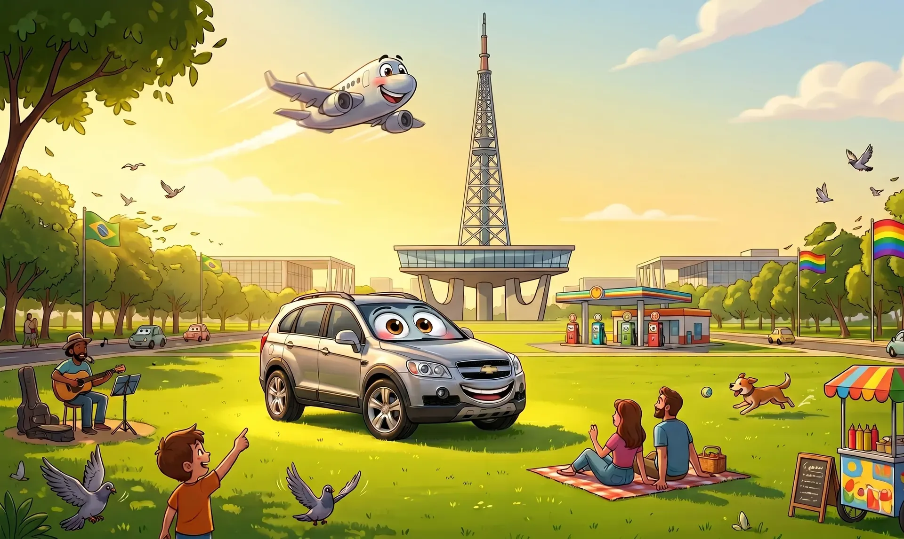
Tô vendendo… Quer comprar?
Espaço de sobra, câmbio automático e uma sede que eu não vou esconder: 7,2 km/l na cidade.
Ver o lado alcoólatra dele ↓Total a pagar
R$ 40.000
negociável · só à vista
Pra ver em Águas Claras, Brasília/DF
- 2.4 EcotecMotor
- 185 cvPotência
- Automático6 marchas
- 821 LPorta-malas
- 5Lugares
- Pilotoautomático
- Ar‑condicionadogelando
- Courocom aquecimento
O carrão
Antes da confissão, o currículo.
Que ele bebe, você já sabe. Agora olha o que vem junto com a sede.

-
Couro que esquenta, ar que gela
Bancos de couro com aquecimento nos dois da frente e ar-condicionado funcionando. Julho no Cerrado amanhece a 10 °C e setembro vira deserto: ele resolve os dois. O do motorista ainda tem ajuste lombar, e a sua coluna vai sentir falta dele.
-
Espaço de mudança
821 litros de porta-malas e 5 lugares. Cabe a feira do mês, a mala da viagem e a culpa de não ter comprado antes.
-
Câmbio automático de 6 marchas
Com modo manual (+/−) pra quando bater a vontade de ser piloto. No trânsito da EPTG, a sua perna esquerda agradece.
-
Piloto automático
Trava a velocidade na estrada e você só conversa. É lá que ele se comporta melhor: 9,7 km/l.
-
Engate
Puxa carretinha, reboque ou a mudança daquele amigo que jurou que era “pouca coisa”.
-
Tecnologia de 2011 que ainda dá conta
Câmera de ré, freio de mão elétrico e computador de bordo. Este último mostra o consumo sem filtro nenhum, coitado.
Ficha técnica
- Motor
- 2.4 Ecotec 16V · 185 cv · gasolina
- Câmbio
- automático, 6 marchas, com modo manual
- Tração
- dianteira
- Quilometragem
- 179.044 km
- Porta-malas
- 821 L
- Tanque
- 73 L (ele precisa)
- Lugares
- 5
- Som
- rádio original de fábrica
O lado alcoólatra
O frentista já sabe o nome dele.
Não vou te enrolar como vendedor de feirão: o consumo é este aqui, medido na vida real, sem ajuda da fábrica.
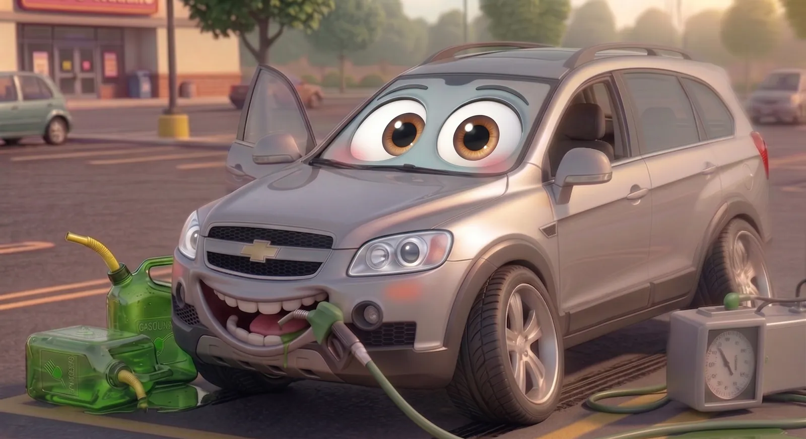
CIDADE
7,2 km/l
ESTRADA
9,7 km/l
Tanque de 73 litros: dá uns 525 km na cidade e uns 700 na estrada. Não é econômico, mas vai a Pirenópolis e volta sem pit stop.
De onde vem a sede? São 1.680 kg de carro, 185 cv e um câmbio automático que não te deixa passar raiva. Conforto tem preço, e ele paga no posto.
Ele até faz regime.
Tem botão ECO do lado da alavanca: o câmbio troca de marcha mais cedo, o acelerador fica mais manso e a marcha lenta cai pra 625 rpm (tá no manual).
Consumo medido pelo dono, no uso real, com gasolina.
Mais fotos
76 fotos, zero maquiagem.
Tiradas no celular, sem filtro e sem ângulo esperto. O que você vê é o que você leva.
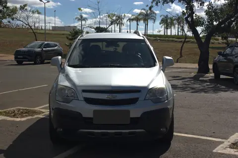
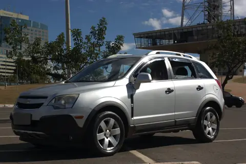
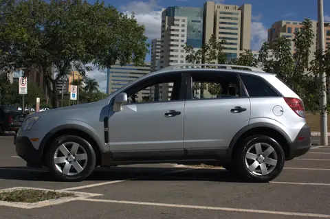
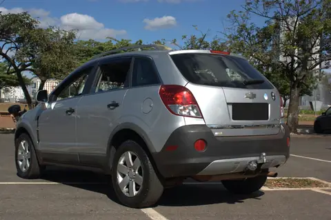
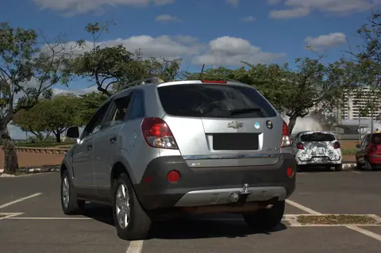
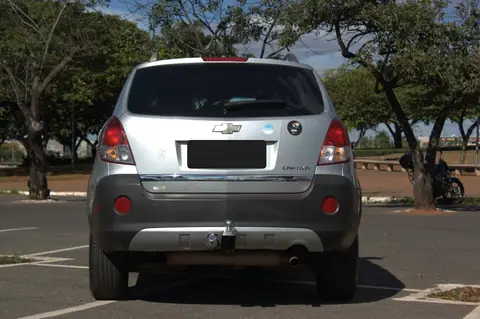
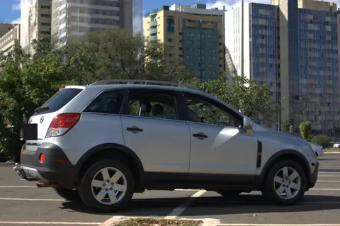
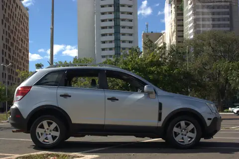
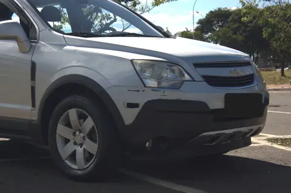
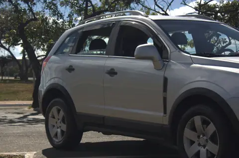
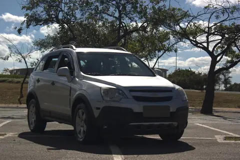
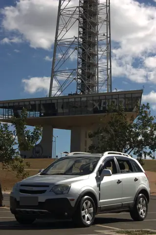
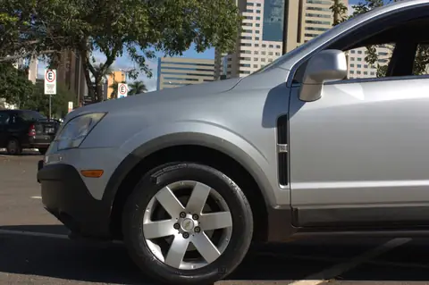
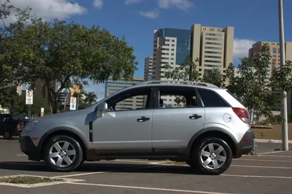
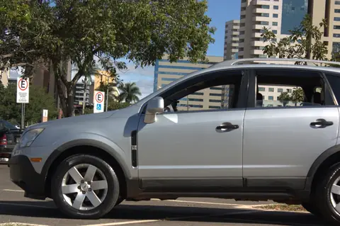
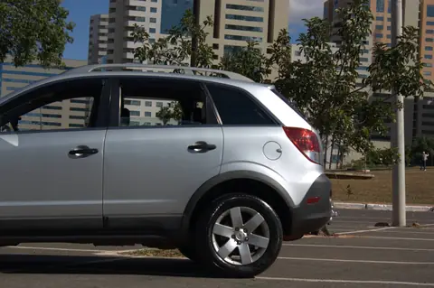
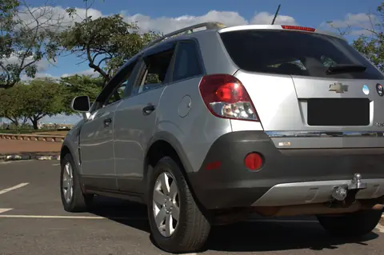
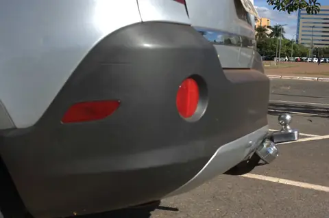
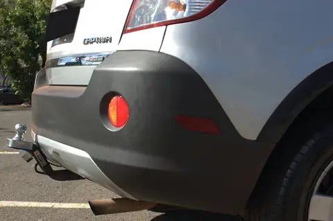
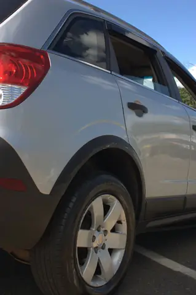
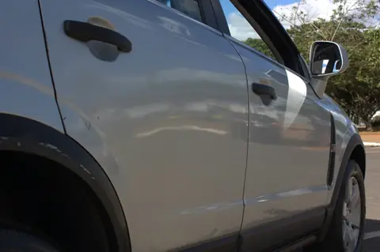
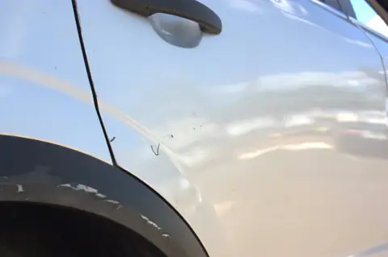
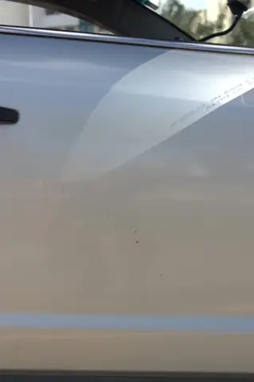
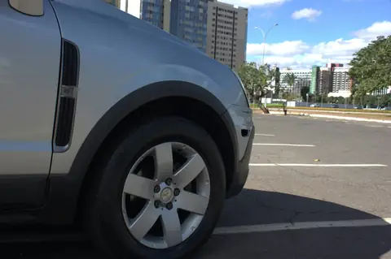
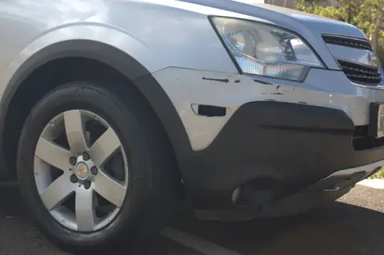
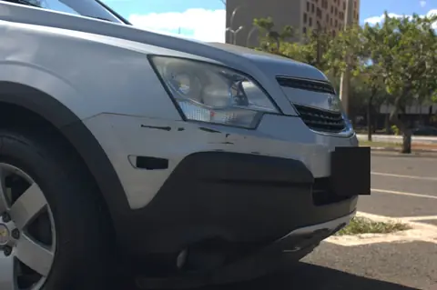
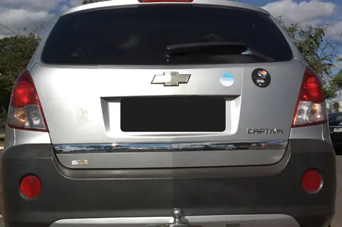
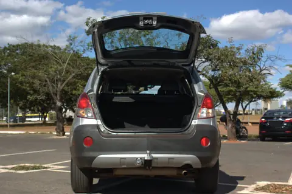
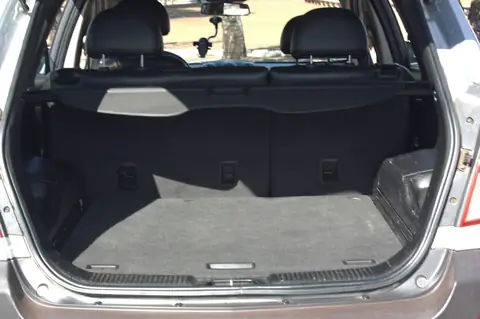
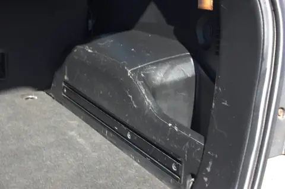
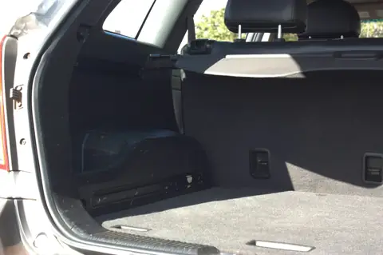
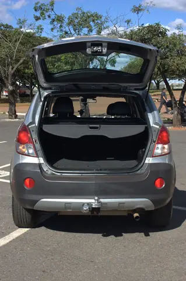
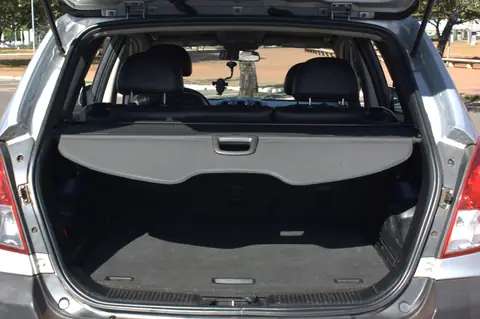
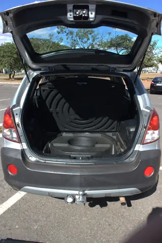
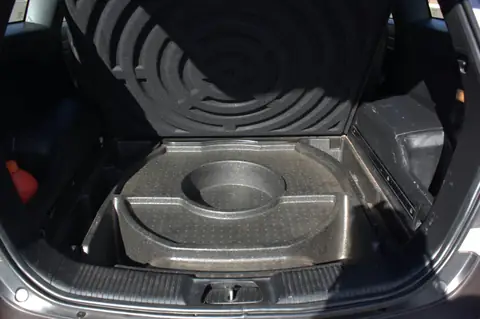
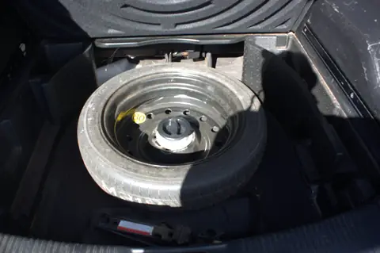
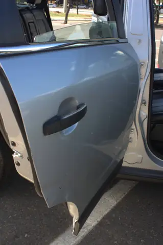
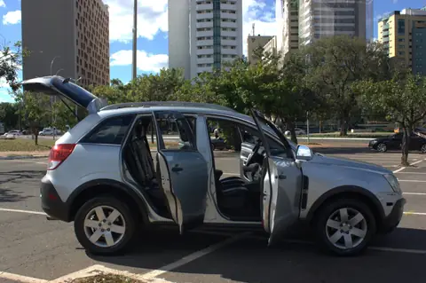
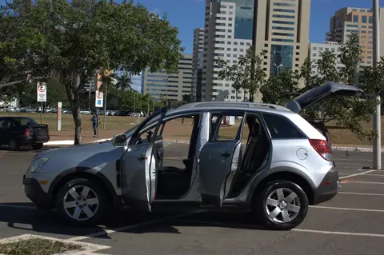
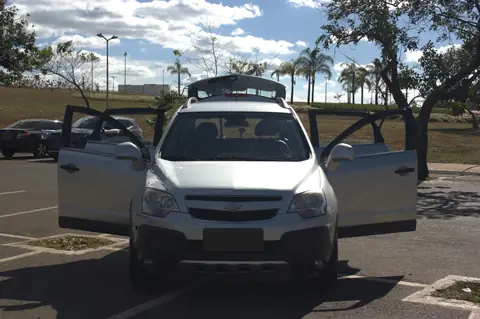
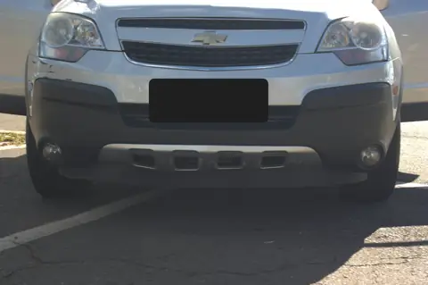
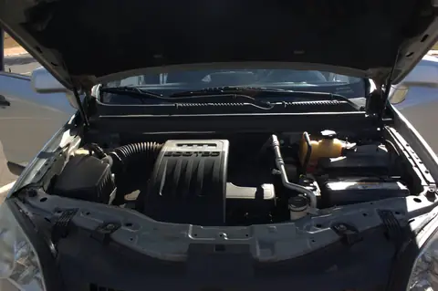
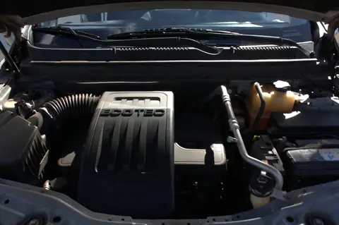
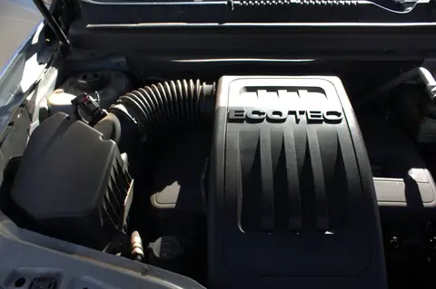
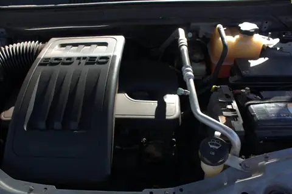
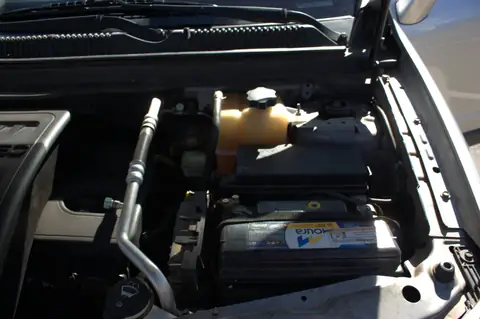
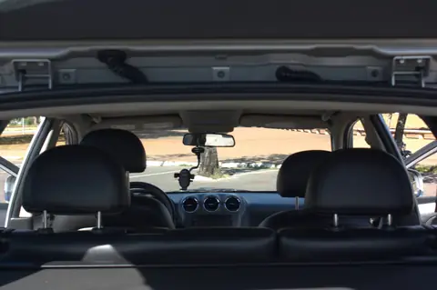
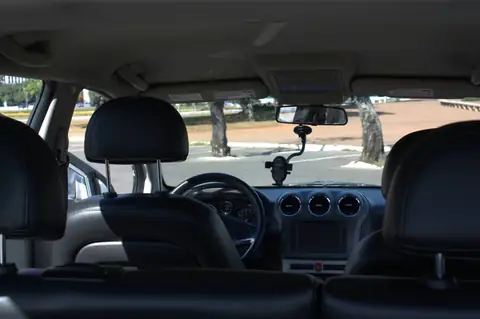


Quer ver alguma coisa que não está aqui? Me chama que eu fotografo.
Pedir foto no WhatsAppFicha corrida
Mimado, e com nota fiscal.
Quase R$ 15 mil em manutenção desde 2024, tudo com nota fiscal. As notas ficam comigo pra você conferir na visita.
Arrefecimento renovado em 2026
Bomba d'água, válvula termostática, sensor de temperatura, tampas e cano de água novos. Brasília passa dos 35 °C em setembro, e ele vai de cabeça fria.
-
2024
Troca de óleo e filtros. Válvula termostática nova.
-
2025
Caixa de direção nova. Discos e pastilhas de freio dianteiros. Amortecedor dianteiro, buchas e bieletas. 2 pneus novos, com alinhamento e balanceamento.
-
2026
Arrefecimento renovado. 4 velas novas. Óleo sintético e todos os filtros trocados, a última vez em outubro.
- IPVA 2026 pago
- Licenciamento 2026 feito
Tem 15 anos e cara de quem faz skincare. O desenho da Captiva envelheceu melhor que muito carro lançado depois dela, e ele ainda chega chegando em qualquer estacionamento.
Marcas de uso
Tem arranhadinhos e marcas normais de uso de um carro de 2011. Nada escondido: estão aqui embaixo e nas 76 fotos.
-
Frente em diagonal -
Arranhadinhos no para-choque dianteiro -
Para-lama e roda dianteira -
Lateral inteira -
Lateral traseira e tampa do tanque -
Traseira em diagonal -
Traseira com engate -
Riscos leves no para-choque traseiro
Fim da história
Começo da sua.
-
Total a pagar
R$ 40.000
negociável
-
Só à vista
sem troca e sem financiamento
-
Vistoria cautelar liberada
por conta do comprador
-
Pra ver em Águas Claras
Brasília/DF
Eu podia ter fotografado só o lado bom e escrito “impecável”. Preferi te contar que ele bebe, mostrar os arranhadinhos e deixar as notas na mesa. Carro usado bom é carro sem surpresa. O que o site não conta, eu conto ao vivo.
Combinado não sai caro
- Pode levar no seu mecânico.
- As notas ficam na mesa. Todas.
- Pergunta o que quiser. Se eu não souber, eu falo que não sei.
- O que você viu aqui é o que você vai ver lá.
Não atendo ligação de número desconhecido (quem atende hoje em dia?). Me chama no WhatsApp que eu respondo.